1016C11 SINGLE CYLINDER HEAD-R R GASKET FOR VERSIONS WITH AIR CONDITIONER
- Path
- Procedures > 10 ENGINE UNIT > 1016 CYLINDER HEAD/S > 1016C CYLINDER HEAD - REMOVE + RE-FIT > 1016C11 SINGLE CYLINDER HEAD-R R GASKET FOR VERSIONS WITH AIR CONDITIONER
- Kind
- repair procedure (removal / refitting; the operation number is the code)
- Applies to
- engines: 2.0 16V, 2.8 JTD 8V; all production periods
- Interactive page
- https://sloeber94.github.io/elrnDB-fDct/en/#/244000642
Applies to: engines: 2.0 16V; all production periods
 Removing
Removing
 Refitting
Refitting1. Undo the fixing bolts (1a) and remove the relay protective cover (1b).
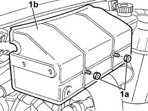
Applies to: engines: 2.0 16V; all production periods
1. Release the relays (1a) from the bracket, undo the fixing nuts (1b) and remove the bracket (1c).
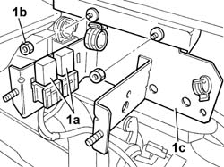
Applies to: engines: 2.0 16V; all production periods
1. Disconnect the retaining band and release the coolant pipe on the reservoir.
2. Disconnect the water pump supply pipe acting on the retaining band.
3. Undo the fixing nuts (3a) and remove the expansion tank (3b).
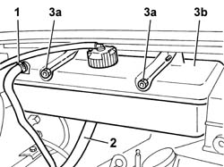
Applies to: engines: 2.0 16V; all production periods
Op. 1048A31 RIGID PIPE CONNECTING AIR CLEANER TO INLET MANIFOLD RIGID PIPE R R
1. Undo the bolts fixing the cold air intake to the upper crossmember.
2. Disconnect the intake hose from the air filter casing.
3. Remove the cold intake and intake hose assembly from the engine compartment.
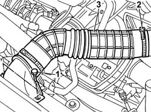
Applies to: engines: 2.0 16V; all production periods
1. Undo the fixing nuts (1b) acting on the band (1a).
2. Remove the filter casing and hoses.
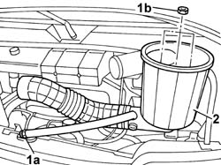
Applies to: engines: 2.0 16V; all production periods
1. Undo the bolts securing the power steering fluid reservoir bracket.
2. Move the power assisted steering fluid reservoir complete with bracket aside.
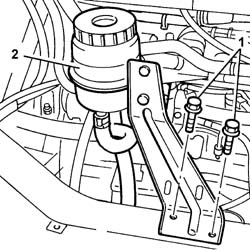
Applies to: engines: 2.0 16V; all production periods
1. Disconnect the electrical connections for the injectors.
2. Acting on the nut, disconnect the coupling for the fuel supply pipe to the single manifold.
3. Disconnect the electrical connection for the detonation sensor.
- Undo the bolts fixing the cable loom to the supply manifold and move it aside.
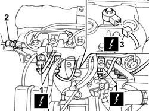
Applies to: engines: 2.0 16V; all production periods
1. Disconnect the electrical connection for the air temperature sensor.
2. Disconnect the electrical connection for the throttle position sensor.
3. Disconnect the electrical connection for the idle air heater.
4. Disconnect the electrical connection for the stepping actuator on the throttle casing.
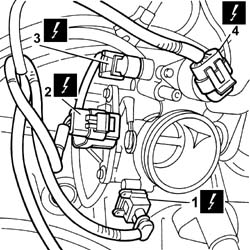
Applies to: engines: 2.0 16V; all production periods
1. Disconnect the electrical connection for the cam angle sensor.
2. Disconnect the coolant temperature sensor electrical connection.
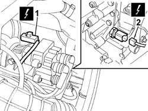
Applies to: engines: 2.0 16V; all production periods
1. Undo the fixing nut (1a) and move the oil vapour separator mounting bracket (1b) aside.
2. Act on the band (2a) and release the petrol vapour recovery pipe (2b).
3. Release the oil vapour recovery pipe.
4. Release the absolute pressure sensor pipe.
5. Release the accelerator control cable.
6. Undo the bolt fixing the mounting bracket for the fuel supply pipe connector.
7. Undo the fixing nuts (7a) and remove the intake manifold (7b).
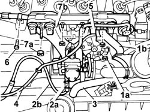
Applies to: engines: 2.0 16V; all production periods
Op. 7055B54 UNDER-ENGINE GUARD - R R
See in Op. 1072C10
- Position a suitable container for collecting the coolant.
1. Act on the band (1a) and release the lower coolant outlet hose (1b) from the two-way metal connector.
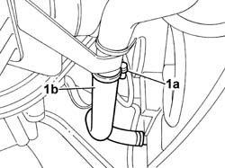
Applies to: engines: 2.0 16V; all production periods
1. Undo the bolt fixing the oil dipsitck bracket.
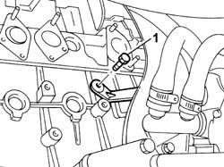
Applies to: engines: 2.0 16V; all production periods
- Lower the vehicle.
1. Undo the fixing bolt (1a) and move the engine oil dipstick mounting bracket (1b) aside.
2. Undo the fixing bolt (2a) and move the radiator coolant outlet hose mounting bracket (2b) aside.
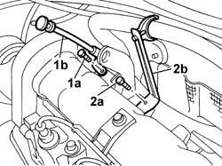
Applies to: engines: 2.0 16V; all production periods
1. Act on the retaining bands (1a) and release the inlet and outlet hoses from the thermostat (1b) and move them aside.
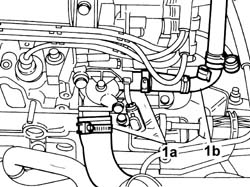
Applies to: engines: 2.0 16V; all production periods
Op. 1092C11 POWER STEERING PUMP DRIVE BELT - R R FOR VERSIONS WITH AIR CONDITIONER
Op. 1092B40 AIR CONDITIONER COMPRESSOR/ALTERNATOR DRIVE BELT - R + R
See in Op. 1092A12
See in Op. 1032D12
See in Op. 1032B14
1. Release the spark plug wiring from the duct and move it aside.
2. Undo the fixing bolts (2a) and remove the single cylinder head (2b).
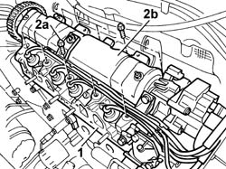
Applies to: engines: 2.0 16V; all production periods
1. Remove the gasket.
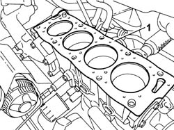
Applies to: engines: 2.0 16V; all production periods
Refitting
Removing- Replace the gasket with a one of the same type .
- Position the cylinder head on the cylinder block/crankcase.
- Lubricate the bolt thread and mating surface.
1. Tighten the cylinder head bolts (1a) to the recommended torque in the order indicated, using an Usag angular tightening tool (1b).
 | Value - daNm | Fastening | Component | Ø |
|---|---|---|---|---|
1a | 3,5 + 7,0 + 160° | Bolt | CYLINDER HEAD | - |
 | Description | Code | Function |
|---|---|---|---|
1b | Torque wrench | 1.860.942.000 | Cylinder head bolts angular tightening |
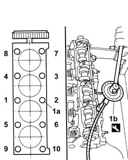
Applies to: engines: 2.0 16V; all production periods
- Fit the spark plug wiring in place.
See in Op. 1032B14
See in Op. 1032D12
See in Op. 1092A12
Op. 1092B40 AIR CONDITIONER COMPRESSOR/ALTERNATOR DRIVE BELT - R + R
Op. 1092C11 POWER STEERING PUMP DRIVE BELT - R R FOR VERSIONS WITH AIR CONDITIONER
- Fit the hoses on the thermostat unit and restore the fastenings.
- Tighten the bolt fixing the mounting bracket for the coolant oulet hose.
- Tighten the bolt fixing the oil dipstick mounting bracket.
- Raise the vehicle.
- Fit the lower coolant oulet hose to the two-way metal connector.
See in Op. 1072C10
Op. 7055B54 UNDER-ENGINE GUARD - R R
- Fit the intake manifold and tighten the fixing nuts.
- Tighten the bolt fixing the mounting bracket for the fuel supply pipe connector.
- Fit the accelerator control cable.
- Fit the absolute pressure sensor pipe.
- Fit the oil vapour recovery pipe.
- Fit the petrol vapour recovery pipe and restore the fastening.
- Fit the oil vapour separator mounting bracket and tighten the fixing bolt.
- Connect the coolant temperature sensor electrical connection.
- Connect the electrical connection for the cam angle sensor.
- Connect the electrical connection for the stepping actuator on the throttle casing.
- Connect the electrical connection for the idle air heater.
- Connect the electrical connection for the throttle position sensor.
- Connect the electrical connection for the air temperature sensor.
- Tighten the bolts fixing the cable loom to the supply manifold.
- Connect the electrical connection for the detonation sensor.
- Connect the electrical connections for the injectors.
- Acting on the nut, connect the coupling for the fuel supply pipe to the single manifold.
- Tighten the bolts fixing the power assisted steering fluid reservoir mounting bracket.
- Fit the cold intake and intake hose assembly in the engine compartment.
Op. 1048A31 RIGID PIPE CONNECTING AIR CLEANER TO INLET MANIFOLD RIGID PIPE R R
- Fit the expansion tank and fit the water pump supply pipe.
- Fit the relay mounting bracket and tighten the fixing nuts.
- Secure the relays to the mounting bracket.
- Fit the relay protective cover and tighten the fixing nuts.
Applies to: engines: 2.8 JTD 8V; all production periods
Removing
Refitting- Disconnect the negative battery terminal.
Op. 0010T20 COOLANT CHECK DENSITY AND TOP UP IF NECESSARY
See in Op. 1088B10
Op. 0010T84 COOLANT FOR AIR CONDITIONING SYSTEM DEHYDRATE AND RECHARGE
1. Open the retaining springs (1a) and disconnect the single-acting valve (1b) on the brake servo, then undo the nuts (1c).
2. Remove the protective cover.
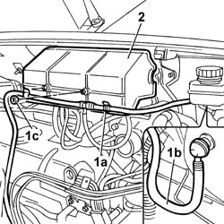
Applies to: engines: 2.8 JTD 8V; all production periods
1. Undo the nuts (1a) and disconnect the electrical connections (1b) from the heat flange relay (1c).
 | Description | Connector |
|---|---|---|
1b | Heat-flange relay | J130A |
| Description | Connector |
|---|---|---|
1b | Heat-flange relay | J130B |
| Description | Connector |
|---|---|---|
1b | Heat-flange relay | J130C |
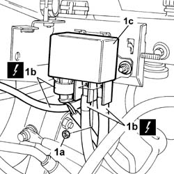
Applies to: engines: 2.8 JTD 8V; all production periods
1. Disconnect the electrical connection (1a) and the pipes (1b) from the EGR solenoid valve.
| Description | Connector |
|---|---|---|
1a | EGR solenoid valve | L030 |
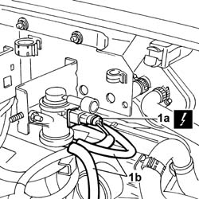
Applies to: engines: 2.8 JTD 8V; all production periods
1. Undo the fixing nuts (1a) and remove the mounting bracket (1b).
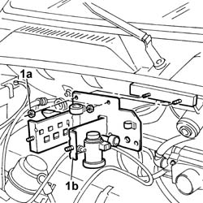
Applies to: engines: 2.8 JTD 8V; all production periods
See in Op. 1048B14
See in Op. 1048B22
- Disconnect the vacuum pipe for the brake servo.
1. Open the retaining band (1a) and release the hose (1b) from the thermostat.
2. Undo the fixing nuts (2a) and remove the bracket (2b) complete with rigid pipe and hoses.
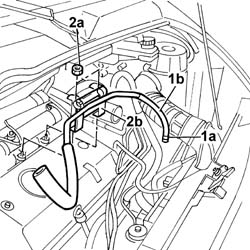
Applies to: engines: 2.8 JTD 8V; all production periods
See in Op. 1016A10
1. Disconnect the electrical connections for the injector wiring from the injectors.
| Description | Connector |
|---|---|---|
1 | Injector | N070A |
| Description | Connector |
|---|---|---|
1 | Injector | N070B |
| Description | Connector |
|---|---|---|
1 | Injector | N070C |
| Description | Connector |
|---|---|---|
1 | Injector | N070D |
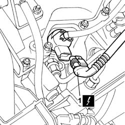
Applies to: engines: 2.8 JTD 8V; all production periods
See in Op. 1060G22
1. Undo the nut (1a) fixing the injector wiring bracket (1b).
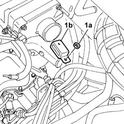
Applies to: engines: 2.8 JTD 8V; all production periods
1. Undo the fixing bolts (1a) and remove the EGR pipe shield (1b).
2. Open the retaiing bands (2a) and release the pipe (2b) on the heater and the pipe (2c) on the EGR pipe.
3. Undo the fixing bolts (3a) and nuts (3b).
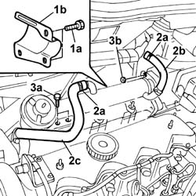
Applies to: engines: 2.8 JTD 8V; all production periods
- Raise the lift.
Op. 7055B54 UNDER-ENGINE GUARD - R R
Op. 1080B62 CATALYTIC CONVERTER - R + R
1. Undo the fixing nuts (1a) and remove the EGR assembly (1b).
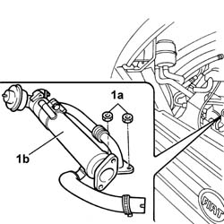
Applies to: engines: 2.8 JTD 8V; all production periods
1. Undo the bolts fixing the cold air intake.
2. Open the band securing the hose to the air filter.
3. Remove the hose complete with cold air intake.
Applies to: engines: 2.8 JTD 8V; all production periods
See in Op. 1048A10
1. Open the retaining band (1a) for the hose (1b) from the flow meter to the turbocharger.
2. Open the band (2a) securing the oil vapour recovery pipe (2b) to the oil vapour recovery reservoir.
3. Undo the bolt (3a) fixing the mounting bracket (3b) for the oil vapour recovery pipe and remove it.
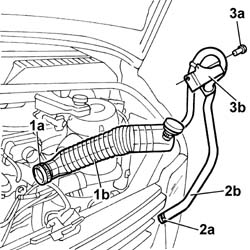
Applies to: engines: 2.8 JTD 8V; all production periods
1. Undo the fixing bolts (1a) and move the mounting bracket (1 b) for the fuel pipes (1c) and the connection for the rpm sensor (1d) aside.
2. Undo the nut (2a) fixing the earth (2b) to the heat flange.
| Description | Connector |
|---|---|---|
2b | Heat flange earth | C090 |
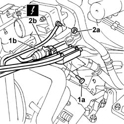
Applies to: engines: 2.8 JTD 8V; all production periods
See in Op. 1048B10
1. Undo the fixing nuts (1a) and remove the intake manifold (1b) complete with: Heat flange (1c), support (1d) and hose filler (1e).
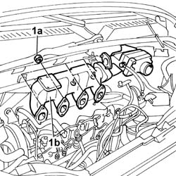
Applies to: engines: 2.8 JTD 8V; all production periods
1. Undo the connector for the fluid pipe on the turbine.
2. Undo the bolt fixing the pipe mounting bracket.
3. Undo the nuts securing the exhaust manifold to the cylinder head.
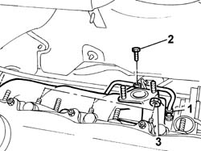
Applies to: engines: 2.8 JTD 8V; all production periods
1. Disconnect the electrical connection (1a) for the oil pressure sensor (1b).
2. Undo the connector (2a) for the turbocharger oil supply pipe (2b) and remove it.
| Description | Connector |
|---|---|---|
1a | Engine oil pressure sensor | K028 |
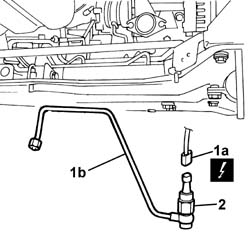
Applies to: engines: 2.8 JTD 8V; all production periods
1. Undo the bolts (1a) fixing the oil return pipe to the turbocharger (1b) and release it.
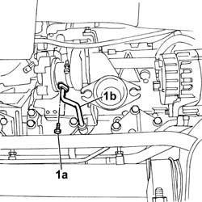
Applies to: engines: 2.8 JTD 8V; all production periods
1. Undo the turbocharger (1b) fixing bolts (1a).
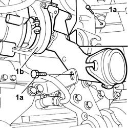
Applies to: engines: 2.8 JTD 8V; all production periods
1. Remove the turbocharger (1a) complete with exhaust manifold (1b).
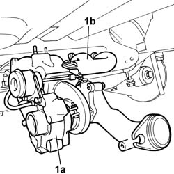
Applies to: engines: 2.8 JTD 8V; all production periods
1. Open the retaining bands (1a) and release the radiator supply and return hoses (1b) and the additional heater pipe (1c).
2. Disconnect the electrical connections for the sensors on the thermostat.
| Description | Connector |
|---|---|---|
2 | Coolant temperature sending unit (for instrument panel) | K035 |
| Description | Connector |
|---|---|---|
2 | Engine coolant temperature sensor/sender unit | K036 |
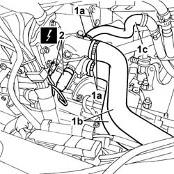
Applies to: engines: 2.8 JTD 8V; all production periods
1. Fit the flywheel lock on the bellhousing.
| Description | Code | Function |
|---|---|---|---|
1 | Flywheel lock | 1.870.765.000 | Engine flywheel lock |
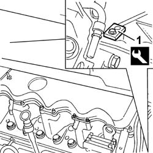
Applies to: engines: 2.8 JTD 8V; all production periods
1. Working on the tensioner (1b) adjustment screw (1a), loosen the compressor drive belt (1c) and remove it.
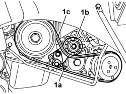
Applies to: engines: 2.8 JTD 8V; all production periods
1. Loosen the bolts (1a) fixing the alternator (1b) and, working on the adjustment screw (1c), loosen the alternator drive belt (1d) and remove it.
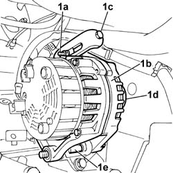
Applies to: engines: 2.8 JTD 8V; all production periods
1. Undo the bolts (1a) and remove the crankshaft pulley (1b) complete with washer (1c).
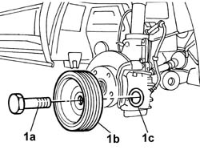
Applies to: engines: 2.8 JTD 8V; all production periods
1. Undo the air conditioning pipe (1b) fixing bolt (1a).
2. Undo the nut (2a) fixing the air conditioning pipes mounting bracket (2b).
3. Release the pipe.
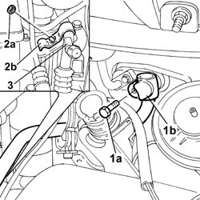
Applies to: engines: 2.8 JTD 8V; all production periods
1. Fit crossmember supporting tool 1870735000
| Description | Code | Function |
|---|---|---|---|
1a | Engine mounting beam | 1.870.735.000 | Support power unit |
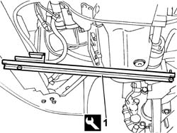
Applies to: engines: 2.8 JTD 8V; all production periods
1. Undo the nuts (1a) and the bolts (1b) fixing the timing side flexible mounting (1c) and remove it.
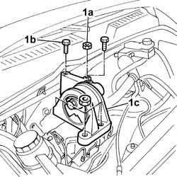
Applies to: engines: 2.8 JTD 8V; all production periods
1. Undo the fixing bolts (1a) for the protective timing cover (1b) and remove it.
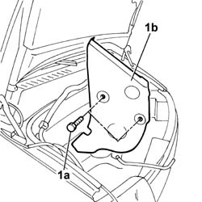
Applies to: engines: 2.8 JTD 8V; all production periods
1. Undo the fixing bolts (1a) and remove the additional protective timing cover (1b).
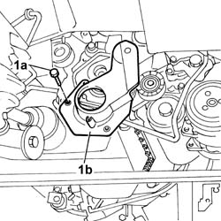
Applies to: engines: 2.8 JTD 8V; all production periods
1. Work on the tensioning piston.
2. Fit the tool
3. Remove the toothed timing belt.
| Description | Code | Function |
|---|---|---|---|
2 | Calibrated shim | 1.860.638.000 | Component for retaining lower timing belt tensioner spring |
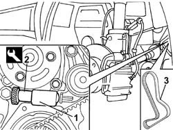
Applies to: engines: 2.8 JTD 8V; all production periods
1. Open the retaining bands (1a) and release the hose (1b) between the thermostat and the rigid pipe and the two supply and return hoses (1c) to the water/oil heat exchanger.
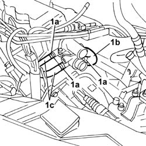
Applies to: engines: 2.8 JTD 8V; all production periods
1. Open the retaining bands (1a) for the pipes (1b).
2. Undo the bolts fixing the oil vapour recovery reservoir.
3. Remove the oil vapour recovery reservior.
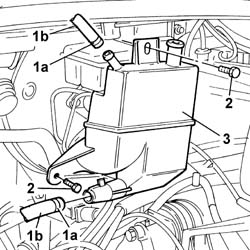
Applies to: engines: 2.8 JTD 8V; all production periods
1. Undo the fastenings (1a) and move the rigid water/oil heat exchanger pipes (1b) aside.
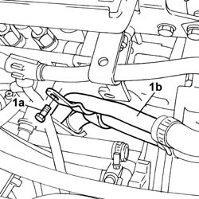
Applies to: engines: 2.8 JTD 8V; all production periods
1. Undo one of the fixing bolts (1a) ande move the oil dipstick (1b) aside.
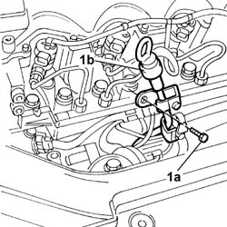
Applies to: engines: 2.8 JTD 8V; all production periods
1. Undo the connectors (1a) and disconnect the rigid injector supply pipes from the single fuel supply pipe (1b).
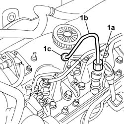
Applies to: engines: 2.8 JTD 8V; all production periods
1. Undo the connectors (1a) and remove the rigid fuel supply pipe for the single rigid fuel delivery pipe (1b).
2. Working on the fasteners (2a), remove the fuel return pipe from the injectors (2b).
Applies to: engines: 2.8 JTD 8V; all production periods
1. Undo the bolt (1a) fixing the fuel recovery manifold (1b) and move it out of the work area.
Applies to: engines: 2.8 JTD 8V; all production periods
1. Undo the remaining fastenings (1a) and remove the protective cover for the single rigid fuel delivery pipe (1b).
Applies to: engines: 2.8 JTD 8V; all production periods
1. Disconnect the electrical connection (1a) for the fuel pressure sensor (1b).
2. Undo the nuts (2a) fixing the single rigid fuel delivery pipe (2b) and remove it.
| Description | Connector |
|---|---|---|
1a | Fuel pressure sensor | K083 |
Applies to: engines: 2.8 JTD 8V; all production periods
1. Undo the fixing bolts (1a) and remove the injectors (1b) from the cylinder head.
2. Undo the bolt (2a) and release the injection wiring bracket (2b) and move it outside of the work area.
3. Undo the nut (3a) and move the mounting bracket for the rigid cooling pipe to the EGR (3b) aside.
Applies to: engines: 2.8 JTD 8V; all production periods
1. Undo the fixing nuts (1a) and remove the tappet cover (1b).
2. Remove the tappet cover gasket.
3. Undo the fixing bolts (3a) and remove the cylinder head (3b).
Applies to: engines: 2.8 JTD 8V; all production periods
1. - Remove the gasket underneath the single cylinder head.
Applies to: engines: 2.8 JTD 8V; all production periods
Refitting
Removing- Fit a new cylinder head gasket on the cylinder block taking care to ensure that it is the same size as the one removed.
- Because the gasket is made out of special material, it undergoes a polymerisation process during engine operation and hardens considerably during service. Take the following precautions to ensure that gasket polymerisation takes place.
- Keep the gasket sealed in its plastic bag and do not remove from its protection until ready to fit.
- Do not lubricate the gasket or contaminate with oil or grease.
1. Tighten the cylinder head fixing bolts checking the torque using the angular tightening tool.
| Description | Code | Function |
|---|---|---|---|
. | Torque wrench | 1.860.942.000 | Cylinder head bolts angular tightening |
| Value - daNm | Fastening | Component | Ø |
|---|---|---|---|---|
. | 6,0 + 6,0 + 180° | Bolt | CYLINDER HEAD | M12 |
Applies to: engines: 2.8 JTD 8V; all production periods
- Position the tappet cover gasket.
- Fit the tappet cover and tighten the nuts, checking the torque.
| Value - daNm | Fastening | Component | Ø |
|---|---|---|---|---|
. | 1,0 | Nut | CAM COVER | - |
- Fit the injector bracket support pads.
- Fit the injectors, complete with seals and brackets, in the seats in the cylinder head and tighten the fixing bolts and check the torque.
| Value - daNm | Fastening | Component | Ø |
|---|---|---|---|---|
. | 2,6 - 3,2 | Bolt | INJECTORS | M6 |
- Fit the injection wiring bracket and tighten the fixing bolt.
- Tighten the nut fixing the rigid cooling pipe to the EGR.
- Positin the single fuel manifold pipe and tighten the fixing nuts.
- Connect the electrical connection for the fuel pressure sensor.
| Description | Connector |
|---|---|---|
1a | Fuel pressure sensor | K083 |
- Fit the single fuel manifold pipe protection securing it using the nuts.
- Reposition the fuel recovery manifold and secure it using the bolt.
- Connect the fuel return pipe to the injectors and secure it using the fasteners.
- Fit the rigid fuel supply pipe for the single fuel manifold pipe checking the torque of both connectors.
| Value - daNm | Fastening | Component | Ø |
|---|---|---|---|---|
. | (Fuel manifold end) 2.6 - 3.2 | Connector | PRESSURE PUMP LINE TO FUEL MANIFOLD | M14 |
| Value - daNm | Fastening | Component | Ø |
|---|---|---|---|---|
. | (Pressure pump end) 1.9 - 2.3 | Connector | PRESSURE PUMP LINE TO FUEL MANIFOLD | M12 |
- Connect the rigid injector supply pipes.
| Value - daNm | Fastening | Component | Ø |
|---|---|---|---|---|
. | (Manifold end) 2.6 - 3.2 | Connector | PIPE FUEL MANIFOLD TO INJECTORS | M14 |
| Value - daNm | Fastening | Component | Ø |
|---|---|---|---|---|
. | (Injector end) 1.9 -2.3 | Connector | PIPE FUEL MANIFOLD TO INJECTORS | M12 |
- Fasten the oil dipstick pipe using the bolt.
- Fasten the water/oil heat exchanger rigid pipes using the bolt.
- Fit the oil vapour recovery reservoir and connect the pipes fastening them using the bands.
- Fit the hose between the thermostat and the rigid pipe and secure it using the bands.
- Connect the two supply and return pipes to the thermostat from the water/oil heat exchanger.
See in Op. 1032B14
- Fit the two supply and return hoses on the thermostat from the radiator and secure them using the bands.
- Connect the electrical connections for the sensors on the thermostat.
| Description | Connector |
|---|---|---|
2 | Coolant temperature sending unit (for instrument panel) | K035 |
| Description | Connector |
|---|---|---|
2 | Engine coolant temperature sensor/sender unit | K036 |
- Connect the additional heater pipe to the thermostat and secure it using the band.
- Position the turbocharger complete with exhaust manifold and gaskets.
- Tighten the bolts fixing the exhaust manifold and check the torque.
- Tighten the bolts fixing the turbocharger to the crankcase.
- Connect the oil return pipe to the turbocharger and fasten it using the bolts.
- Connect the rigid oil supply pipe to the turbine complete with oil pressure sensor.
- Connect the electrical connection for the engine oil pressure sensor.
| Description | Connector |
|---|---|---|
1a | Engine oil pressure sensor | K028 |
- Tighten the bolt fixing the bracket for the rigid oil supply pipe to the turbine.
- Tighten the nuts fixing the exhaust manifold to the cylinder head and check the torque.
| Value - daNm | Fastening | Component | Ø |
|---|---|---|---|---|
. | (Cylinder head side) 2.1 -2.6 | Nut | EXHAUST MANIFOLD/S | M8 |
- Fit the intake manifold complete with heat flange, support and hose filler plus the gaskets.
- Tighten the nutss fixing the intake manifold and check the torque.
| Value - daNm | Fastening | Component | Ø |
|---|---|---|---|---|
. | (Cylinder head side) 2.5 | Nut | INLET MANIFOLD | M8 |
See in Op. 1048B10
- Connect the earth to the heat flange and tighten the fixing nut.
| Description | Connector |
|---|---|---|
2b | Heat flange earth | C090 |
- Fit the fuel pipe mounting bracket using the bolts.
- Place the oil vapour recovery pipe mounting bracket and fastenings in position.
- Connect the oil vapour recovery pipe to the reservoir and secure it using the band.
See in Op. 1048A10
- Connect the turbocharger hose to the air flow meter and secure it using the retaining band.
- Tighten the cold air intake complete with hose to the front crossmember and connect it to the filter casing fastening it using a retaining band.
- Fit the EGR assembly and fastenings and check the torque.
| Value - daNm | Fastening | Component | Ø |
|---|---|---|---|---|
. | (Intake manifold side) | Bolt | (EGR)/INTAKE VALVE EXAUST GAS PIPE | - |
| Value - daNm | Fastening | Component | Ø |
|---|---|---|---|---|
. | (Heat-flange end) | Nut | EXHAUST GAS/WATER HEAT EXCHANGER for system | - |
- Connect the pipe to the heater and secure it using a retaining band.
- Connect the pipe to the EGR valve exhaust gas pipe using the band.
- Fit the EGR pipe shield using the fixing bolts.
Op. 1080B62 CATALYTIC CONVERTER - R + R
Op. 7055B54 UNDER-ENGINE GUARD - R R
See in Op. 1060G22
- Secure the injector wiring mounting bracket using a nut.
- Connect the electrical connections for the injector wiring to the injectors.
| Description | Connector |
|---|---|---|
1 | Injector | N070A |
| Description | Connector |
|---|---|---|
1 | Injector | N070B |
| Description | Connector |
|---|---|---|
1 | Injector | N070C |
| Description | Connector |
|---|---|---|
1 | Injector | N070D |
See in Op. 1016A10
- Fit the bracket and nuts and connect a hose to the thermostat.
- Connect the vacuum pipe for the brake servo.
See in Op. 1048B22
See in Op. 1048B14
- Fit the mounting bracket for the EGR solenoid valve and heat flange relay.
- Connect the pipes to the EGR solenoid valve.
- Connect the electrical connection to the solenoid valve.
| Description | Connector |
|---|---|---|
1a | EGR solenoid valve | L030 |
- Connect the electrical connections to the heat flange relay.
| Description | Connector |
|---|---|---|
1b | Heat-flange relay | J130A |
| Description | Connector |
|---|---|---|
1b | Heat-flange relay | J130B |
| Description | Connector |
|---|---|---|
1b | Heat-flange relay | J130C |
- Fit the protective cover and secure it using the nuts and fasten the brake servo pipe to the retaining springs.
Op. 0010T84 COOLANT FOR AIR CONDITIONING SYSTEM DEHYDRATE AND RECHARGE
See in Op. 1088B10
Op. 0010T20 COOLANT CHECK DENSITY AND TOP UP IF NECESSARY
Op. 0010T11 ENGINE OIL CHECK LEVEL AND TOP UP
- Connect the negative battery terminal.
Topics linked from this page (9)
- 0010T11 ENGINE OIL CHECK LEVEL AND TOP UP
- 0010T20 COOLANT CHECK DENSITY AND TOP UP IF NECESSARY
- 0010T84 COOLANT FOR AIR CONDITIONING SYSTEM DEHYDRATE AND RECHARGE
- 1048A31 RIGID PIPE CONNECTING AIR CLEANER TO INLET MANIFOLD RIGID PIPE R R
- 1060G10 FLOW METER - R R
- 1080B62 CATALYTIC CONVERTER - R + R
- 1092B40 AIR CONDITIONER COMPRESSOR/ALTERNATOR DRIVE BELT - R + R
- 1092C11 POWER STEERING PUMP DRIVE BELT - R R FOR VERSIONS WITH AIR CONDITIONER
- 7055B54 UNDER-ENGINE GUARD - R R